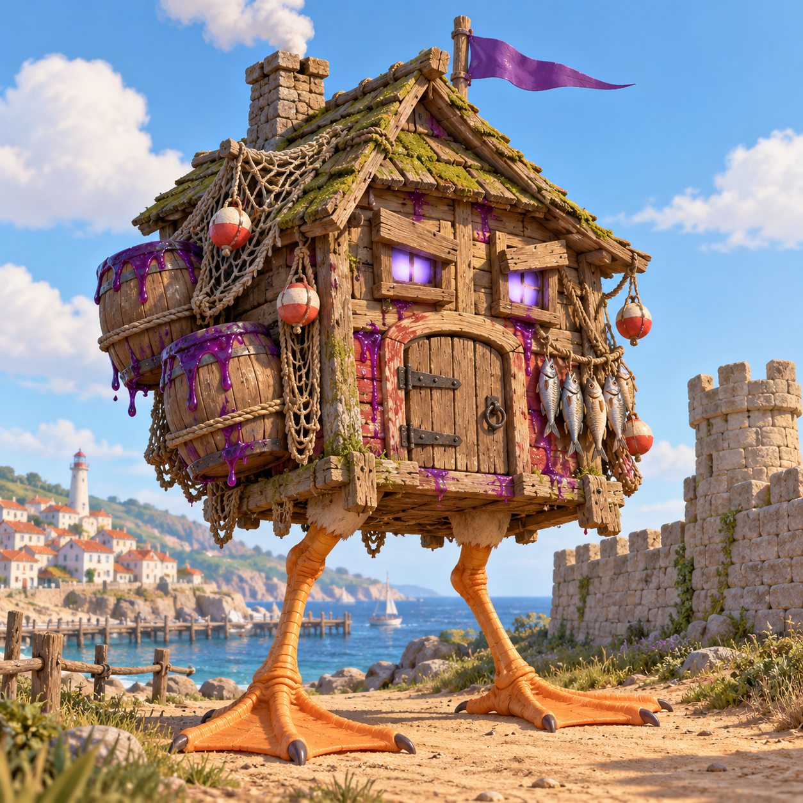
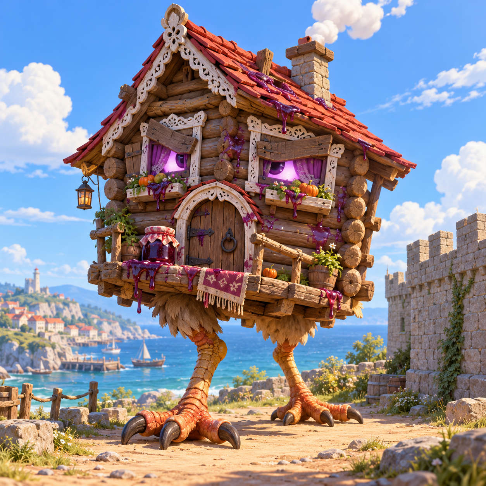
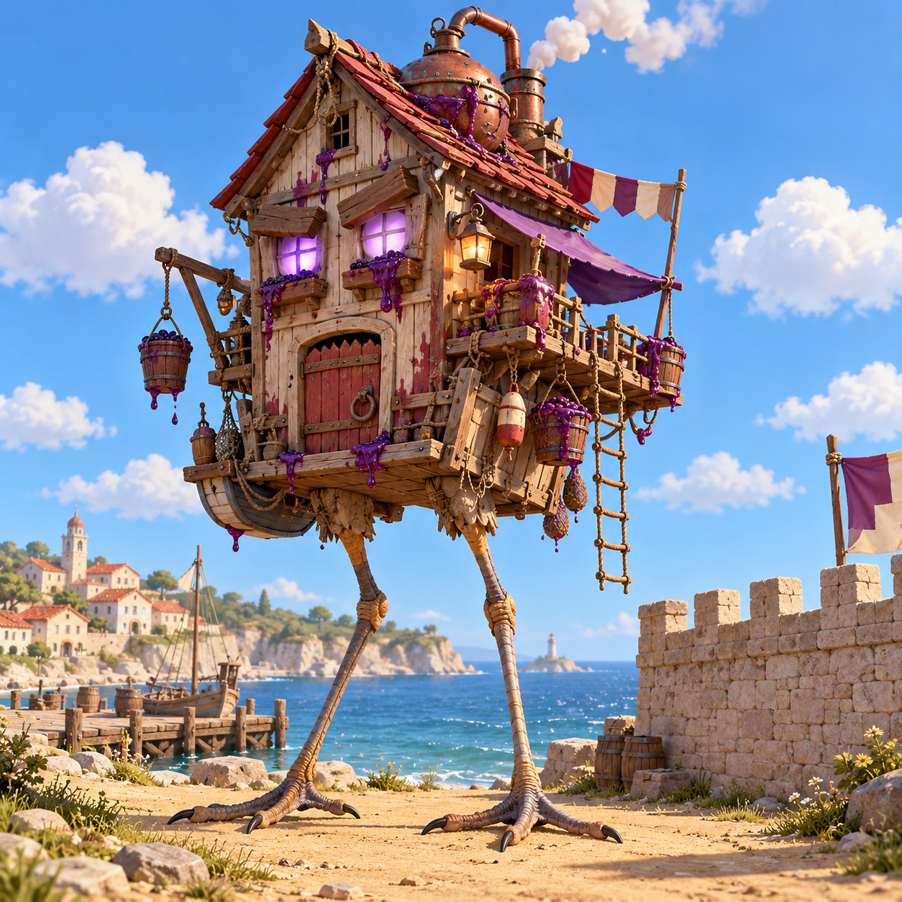

Избушка — финал забега
Старая рыбацкая изба с берега, которую Барон Варенья поставил на огромные лапы чайки и превратил в последний таран. Сети, поплавки, вяленая рыба, бочки варенья на боку, сиреневый вымпел на коньке. Ростом 11 м — втрое выше стены. Финальный бой: три фазы, около 4–5 минут, с каждой фазой злее.
Фазы
| Фаза | Здоровье | Что делает |
|---|---|---|
| 1 | 100–66 % | Пинок по стене ломает участок под меткой; печные бомбы — три бочки из трубы по ходу стены. После пинка дверь настежь — 3 с голубой печи. |
| 2 | 66–33 % | Растопила печь: огонь и чёрный дым из трубы. Бомб — пять, добавляется топот: прыжок, волна по земле и по стене — всех со стены сбивает, ворота трещат. |
| 3 | 33–0 % | Ярость: в окнах красные угли, ходит быстрее. Наседка: запрыгивает на стену, садится — участок сразу в пролом — и несёт во двор три бочки-яйца, из каждой выбегают шустрики. Пока сидит, дверь открыта 5 с. |
Атаки — как готовит и как уйти
| Атака | Подготовка (1,8 с) | Что делать |
|---|---|---|
| Пинок | Переносит вес, заносит лапу назад и дважды скребёт землю. Метка — прямоугольник на участке стены. | Уйти с участка. Участок −60 % прочности: два пинка — пролом. |
| Печные бомбы | Приседает, раздувается, окна выпучены, дрожит. Круги на ходу стены. | Уйти из кругов. 25 урона игроку, −10 % участку. |
| Топот | Глубоко приседает, лапы дрожат. Большой круг вокруг и полоса по стене. | Прыгнуть в момент удара — иначе сбросит со стены во двор (30 урона). |
| Наседка | Ворочается, как курица на гнезде. Метка на участке стены. | Уйти с участка; потом бить в голубую печь, бочки-яйца разбивать до вылупления. |
Как с ней бороться
- Бить в дверь, когда печь голубая: урон ×3. Окна: после пинка и топота (3 с) и всё время «наседки» (5 с).
- Чинить проломы: подойти к пролому, держать E, тратится золото забега; вдвоём — вдвое быстрее. Через пролом идёт орда — финал на этом и держится.
- Не стоять толпой на одном участке: бомбы и пинок накрывают по 4–5 м стены.
- Бочки-яйца во дворе — разбить за 4 с, пока не вылупились.
Здоровье (предложение)
×3 от обычного босса 50-й волны по нынешней формуле крепости, по трети на фазу:
Награда (предложение)
Победа в забеге — рекорд «50 из 50». Каждому — 40 жетонов за Избушку (обычный босс даёт 8) и трофей на доске рекордов у ворот.
Числа — заготовка для общего баланса 50 волн (вкладка «План волн» на главной странице переделки).
Концепты
Три варианта на выбор. Модель сделана по варианту A.



Модель и анимации
Код three.js по образцу мобов крепости: цвета в вершинах, общий материал крепости (вспышка удара, свечение глаз и печи). —, 19 частей. Лапы — две кости и стопа: обратное колено, как у птицы; шаг считается от пройденного пути — стопа не скользит.
Анимации: стоит (дышит дверью, моргает, скребёт землю), идёт, появление (сидела наседкой — встаёт), пинок, печные бомбы, ядро открыто, переход во 2-ю и 3-ю фазу, топот, наседка, удар, гибель (валится на спину, лапы кверху).